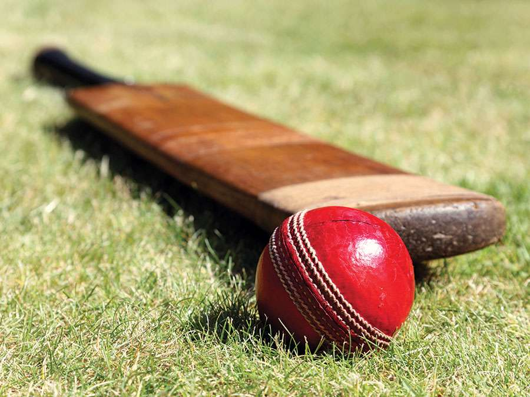

MY FAVOURITE SPORTS
* CRICKET

I like cricket most.From my little childhood i used to play cricket.From my childhood till now i do play crikcet in the roof top of my house.By playing cricket i fell.And by playing cricket one can remian healthy.That’s not to say that cricket doesn’t have its aesthetic pleasures: balance in movement, elegance of form and delicacy of touch. However, there’s no beauty if the effort fails. If the fielder drops the catch, no one remembers the balletic leap. The front foot drive, however graceful, is always incomplete if it’s intercepted at cover. Unlike a dancer, a cricketer faces an opponent, whose aim is to throw him or her off balance, to make the graceful follow-through look an ungainly air-shot. Competition is the foundation, the necessary platform of the aesthetic in sport, which doesn’t exist apart from it. That’s why it’s possible to enjoy and appreciate “ugly” cricket, even find it beautiful in its way, depending on the circumstances and the personalities involved.
GO TO FIRST PAGE